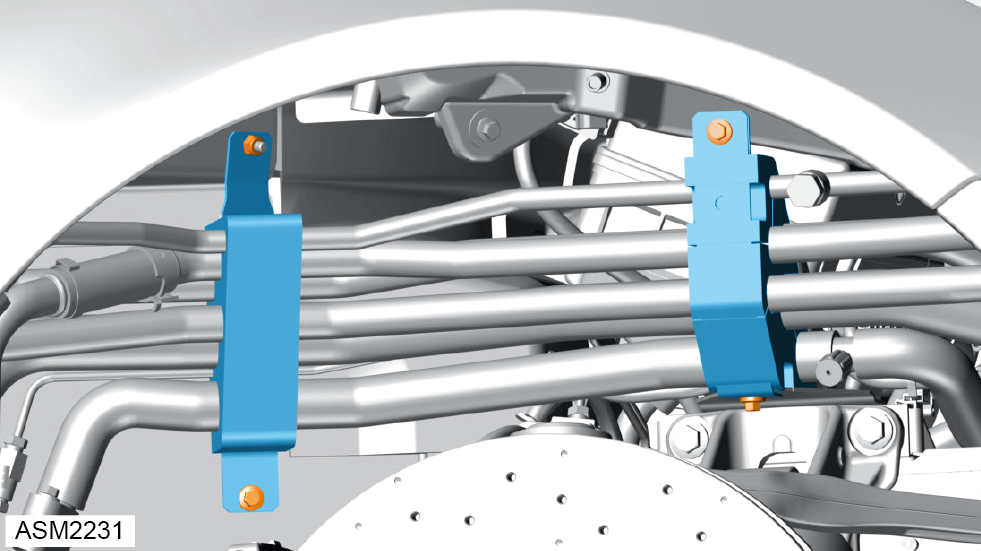
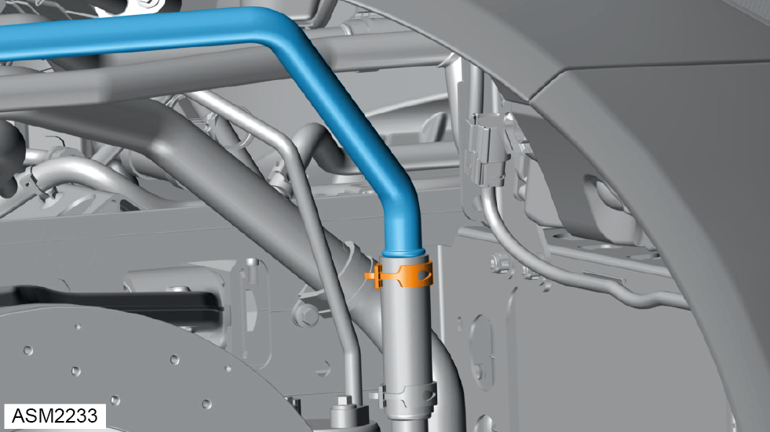

Pipe -Intermediate Auxiliary Radiator Inlet - 4 Cylinder
Print
Operation Code: 46.01.49-02
Removal
- Drain coolant. Refer to procedure.

- Remove M6 nut securing bracket to front subframe. Torque 8 Nm.
- Remove M6x20 bolts (x3) securing brackets (x2) to front subframe. Torque 8 Nm.
- Remove brackets and foam.
- Release clamp securing auxiliary radiator intermediate inlet pipe to link hose.
- Disconnect auxiliary radiator intermediate inlet pipe from link hose.
 WARNING: Coolant is a toxic substance and can be lethal if ingested.
WARNING: Coolant is a toxic substance and can be lethal if ingested.
NOTE: Drain coolant into a suitable container and dispose of appropriately.

- Release clamp securing auxiliary radiator intermediate inlet pipe to link hose.
- Disconnect auxiliary radiator intermediate inlet pipe from link hose.
- Remove auxiliary radiator intermediate inlet pipe.
Installation
- Installation is the reverse of removal procedure except for the following:
- Refill coolant.